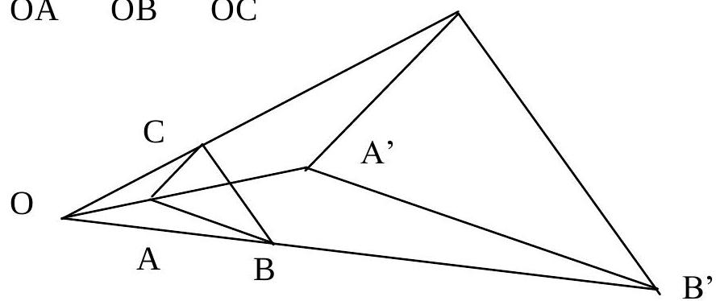

Chapter 9: Matrices And Transformations (Continued)
9.3 Rules/Matrix Algebra (Continued)
If A and B represent two matrices, then in general $A \cdot B \neq B \cdot A$ (Matrix multiplication is not commutative).
Two matrices are equal if and only if their corresponding elements are equal.
Thus, if $\begin{pmatrix} a & c \\ b & d \end{pmatrix} = \begin{pmatrix} e & g \\ f & h \end{pmatrix}$
then it follows that a=e, b=f, c=g and d=h.
If $\begin{pmatrix} x \\ y \end{pmatrix} = \begin{pmatrix} 2 \\ 3 \end{pmatrix}$ then it follows that x=2 and y=3.
When a matrix is multiplied by a constant, every element in the matrix is enlarged by the constant.
Thus, $c \begin{pmatrix} p & q \\ r & s \end{pmatrix} = \begin{pmatrix} cp & cq \\ cr & cs \end{pmatrix}$
If A and B are any two matrices, $A B = 0$ does not necessarily imply that either A=0 or B=0.
Example:
If $A = \begin{pmatrix} 1 & 0 \\ 0 & 0 \end{pmatrix}$ and $B = \begin{pmatrix} 0 & 0 \\ 0 & 1 \end{pmatrix}$
Unlike ordinary algebra, the fact that AB = AC does not necessarily imply that B = C.
Example:
If $A = \begin{pmatrix} 1 & 0 \\ 1 & 0 \end{pmatrix}$ and $B = \begin{pmatrix} 1 & 0 \\ 0 & 0 \end{pmatrix}$ and $C = \begin{pmatrix} 1 & 0 \\ 0 & 1 \end{pmatrix}$
then $AB = \begin{pmatrix} 1 & 0 \\ 1 & 0 \end{pmatrix} \begin{pmatrix} 1 & 0 \\ 0 & 0 \end{pmatrix} = \begin{pmatrix} 1 & 0 \\ 1 & 0 \end{pmatrix}$
and $AC = \begin{pmatrix} 1 & 0 \\ 1 & 0 \end{pmatrix} \begin{pmatrix} 1 & 0 \\ 0 & 1 \end{pmatrix} = \begin{pmatrix} 1 & 0 \\ 1 & 0 \end{pmatrix}$
So AB = AC.
But $B \neq C$ and $A \neq 0$
Example:
Given $A = \begin{pmatrix} 1 & 3 \\ 2 & -1 \end{pmatrix}$ and $B = \begin{pmatrix} 2 & 0 & -4 \\ 3 & -2 & 6 \end{pmatrix}$
Solution.
Since A is 2x2 and B is 2x3, the product matrix AB is defined and is a 2x3 matrix. To obtain the elements in the first row of the product matrix AB, multiply the first row (1 3) of A by the columns $\begin{pmatrix} 2 \\ 3 \end{pmatrix}, \begin{pmatrix} 0 \\ -2 \end{pmatrix}$ and $\begin{pmatrix} -4 \\ 6 \end{pmatrix}$ of B respectively.
Step 1 (Row 1):
$(1 \times 2 + 3 \times 3 \quad 1 \times 0 + 3 \times (-2) \quad 1 \times (-4) + 3 \times 6) = (2+9 \quad 0-6 \quad -4+18) = (11 \quad -6 \quad 14)$
To obtain the elements in the second row of the product matrix AB, multiply the second row (2 -1) of A by the columns of B respectively.
Step 2 (Row 2):
$(2 \times 2 + (-1) \times 3 \quad 2 \times 0 + (-1) \times (-2) \quad 2 \times (-4) + (-1) \times 6) = (4-3 \quad 0+2 \quad -8-6) = (1 \quad 2 \quad -14)$
Result:
Matrix multiplication does not obey the commutative law, i.e. the products AB and BA of matrices need not be equal.
9.4 Equivalent Matrices
Two matrices are equal if and only if their corresponding elements are equal. For instance, if
$A = \begin{pmatrix} 2 & 3 \\ 4 & 5 \end{pmatrix}$, and $B = \begin{pmatrix} 2 & 3 \\ 4 & 5 \end{pmatrix}$
then matrix A = matrix B.
Example:
Given $A = \begin{pmatrix} x & 2 \\ 1 & y \end{pmatrix}$, $B = \begin{pmatrix} 3 & -5 \\ 4 & 2 \end{pmatrix}$ and $C = \begin{pmatrix} 8 & -3 \\ 5 & 0 \end{pmatrix}$
- Find the values of x and y if A + B = C.
- Is BC = CB?
- Evaluate 3B.
Solution:
- $A + B = \begin{pmatrix} x & 2 \\ 1 & y \end{pmatrix} + \begin{pmatrix} 3 & -5 \\ 4 & 2 \end{pmatrix} = \begin{pmatrix} x+3 & 2-5 \\ 1+4 & y+2 \end{pmatrix} = \begin{pmatrix} x+3 & -3 \\ 5 & y+2 \end{pmatrix}$
- Since A + B = C
- $\Rightarrow \begin{pmatrix} x+3 & -3 \\ 5 & y+2 \end{pmatrix} = \begin{pmatrix} 8 & -3 \\ 5 & 0 \end{pmatrix}$
- $\Rightarrow x+3=8$ and $y+2=0$
- Therefore x=5, y=-2
- $BC = \begin{pmatrix} 3 & -5 \\ 4 & 2 \end{pmatrix} \begin{pmatrix} 8 & -3 \\ 5 & 0 \end{pmatrix} = \begin{pmatrix} 24-25 & -9+0 \\ 32+10 & -12+0 \end{pmatrix} = \begin{pmatrix} -1 & -9 \\ 42 & -12 \end{pmatrix}$
- $CB = \begin{pmatrix} 8 & -3 \\ 5 & 0 \end{pmatrix} \begin{pmatrix} 3 & -5 \\ 4 & 2 \end{pmatrix} = \begin{pmatrix} 24-12 & -40-6 \\ 15+0 & -25+0 \end{pmatrix} = \begin{pmatrix} 12 & -46 \\ 15 & -25 \end{pmatrix}$
- Thus $BC \neq CB$
- $3B = 3 \begin{pmatrix} 3 & -5 \\ 4 & 2 \end{pmatrix} = \begin{pmatrix} 3 \times 3 & 3 \times (-5) \\ 3 \times 4 & 3 \times 2 \end{pmatrix} = \begin{pmatrix} 9 & -15 \\ 12 & 6 \end{pmatrix}$
Example: (A typical examination question)
A company makes two microcomputers, named SOLAR and GEM, using three main components X, Y and Z
SOLAR is made of 3 X components and 2 Y components.
GEM is made of 2 X components and 3 Z components.
- Express this information as a 2 by 3 array Q.
The company receives an ORDER for 100 SOLAR and 50 GEM microcomputers.
- Express the ORDER as a row matrix (array) P.
- Find the product PQ and interpret its meaning.
- If it takes 2 hours to produce the component X, 1 hour to produce Y and 3 hours to produce Z, represent this information as a column matrix R.
- Calculate PQR and interpret its meaning?
A second order for 50 solar and 100 gem microcomputer is subsequently received but by then New Production Techniques have resulted in the time needed to produce X cut by 20%, and the time to produce Z cut by a third. The time taken to produce Y is unchanged.
- Use matrix (array) techniques to determine the COMPONENT REQUIREMENTS for the Second Order.
- Determine the HOURS needed to produce the SECOND ORDER.
For the FIRST ORDER labour costs were 3 units per hour, but had INCREASED by 10% for the SECOND ORDER.
- Determine whether these LABOUR COSTS are greater or smaller than those for the FIRST ORDER.
Solution:
- Matrix Q (Components per Computer): $\begin{matrix} & X & Y & Z \\ SOLAR & \begin{pmatrix} 3 & 2 & 0 \\ 2 & 0 & 3 \end{pmatrix} \\ GEM \end{matrix}$
- Matrix P (Order 1): $\begin{pmatrix} SOLAR & GEM \\ 100 & 50 \end{pmatrix}$
- PQ (Total Components for Order 1): $\begin{pmatrix} 100 & 50 \end{pmatrix} \begin{pmatrix} 3 & 2 & 0 \\ 2 & 0 & 3 \end{pmatrix} = \begin{pmatrix} (100 \times 3 + 50 \times 2) & (100 \times 2 + 50 \times 0) & (100 \times 0 + 50 \times 3) \end{pmatrix} = \begin{pmatrix} 400 & 200 & 150 \end{pmatrix}$. This means that the ORDER requires 400 of X, 200 of Y and 150 of Z.
- Matrix R (Hours per Component): $\begin{pmatrix} 2 \\ 1 \\ 3 \end{pmatrix} \begin{matrix} X \\ Y \\ Z \end{matrix}$
- PQR (Total Hours for Order 1): $(PQ)R = \begin{pmatrix} 400 & 200 & 150 \end{pmatrix} \begin{pmatrix} 2 \\ 1 \\ 3 \end{pmatrix} = (400 \times 2 + 200 \times 1 + 150 \times 3) = (800 + 200 + 450) = 1450$. This means that the order will require 1450 hours to produce.
- Matrix P2 (Order 2): $\begin{pmatrix} 50 & 100 \end{pmatrix}$. Component Requirements = P2 * Q = $\begin{pmatrix} 50 & 100 \end{pmatrix} \begin{pmatrix} 3 & 2 & 0 \\ 2 & 0 & 3 \end{pmatrix} = \begin{pmatrix} (50 \times 3 + 100 \times 2) & (50 \times 2 + 100 \times 0) & (50 \times 0 + 100 \times 3) \end{pmatrix} = \begin{pmatrix} 350 & 100 & 300 \end{pmatrix}$. Hence it requires 350 of X, 100 of Y and 300 of Z.
- New Production Times: X = 2 * (1 - 0.20) = 1.6 hours. Y = 1 hour. Z = 3 * (1 - 1/3) = 2 hours. New Matrix R2 = $\begin{pmatrix} 1.6 \\ 1 \\ 2 \end{pmatrix}$. Hours for Order 2 = (P2 * Q) * R2 = $\begin{pmatrix} 350 & 100 & 300 \end{pmatrix} \begin{pmatrix} 1.6 \\ 1 \\ 2 \end{pmatrix} = (350 \times 1.6 + 100 \times 1 + 300 \times 2) = (560 + 100 + 600) = 1260$ hours.
- Labour costs for first order = 3 units/hour * 1450 hours = 4350 units.
- New Labour Cost = 3 * (1 + 0.10) = 3.3 units/hour. Labour costs for second order = 3.3 units/hour * 1260 hours = 4158 units.
- Hence the labour costs for the second order (4158) are smaller than those for the first order (4350).
9.5 Transformations
A transformation is an operation which transforms a point or a figure into another point or figure.
9.5.1 Translation
A translation is a transformation which moves all points in a plane through the same distance in the same direction.
E.g. The triangle ABC has been transformed onto the triangle A'B'C' by a translation $\begin{pmatrix} 3 \\ 2 \end{pmatrix}$ i.e. 3 squares to the right and 2 squares up in the plane of the paper.
Point A is mapped onto A' by T = $\begin{pmatrix} 3 \\ 2 \end{pmatrix}$.
If A = (x, y) and A' = (x', y'), then $\begin{pmatrix} x' \\ y' \end{pmatrix} = \begin{pmatrix} x \\ y \end{pmatrix} + \begin{pmatrix} 3 \\ 2 \end{pmatrix}$.
Example: A(1,1) -> A'(1+3, 1+2) = A'(4,3).
9.5.2 Enlargement (E)
An enlargement with centre O, scale factor k is a transformation which enlarges a given figure by k times the original size.
If k > 0, the given figure and its image are on the same side of the centre of enlargement O.
If k < 0, the given figure and its image are on opposite sides of O.
The figure and its image after an enlargement are similar. The scale factor $k = \frac{OA'}{OA} = \frac{OB'}{OB} = \frac{OC'}{OC}$
Under an enlargement, $\frac{\text{Area of Image}}{\text{Area of Figure}} = k^2$
If the image of a point (x, y) under a transformation is the point itself i.e. (x, y), the point (x, y) is called an invariant point of the transformation.
If a line is mapped onto itself under a transformation, the line is said to be an invariant line under the transformation.
9.5.3 Reflection
A reflection is a transformation which reflects all points of a plane in a line (on the plane) called the mirror line.
Triangle ABC is mapped onto Triangle A'B'C' under a reflection in the line XY which is the perpendicular bisector of AA', BB' or CC'.
Under a reflection, the figure and its image are congruent.
Example:
9.5.4 Rotation (R)
A rotation is a transformation which rotates all points on a plane about a fixed point known as the centre of rotation, through a given angle in anti-clockwise or clockwise direction.
The angle through which the points are rotated is called the angle of rotation.
The triangle ABC is rotated about the origin O through 90° in the anti-clockwise direction, and mapped onto triangle A'B'C'.